Maths Week Australia is a free celebration giving schools a dedicated time in their calendar to come together around maths. Teachers and their students are invited to get involved in recognising, valuing and enjoying maths together.
Maths Week Australia presents an opportunity to shift our national conversation about maths, where narratives about declining test scores, criticisms of teachers, and anxiety and disengagement amongst students predominate.
With this backdrop, the event exists to create energy, excitement and to showcase the great work being done by teachers, in schools and in communities across the country.
Help a wider range of students see that maths is for them
Celebrate home-grown mathematical thinking, creativity and talent
Put a national spotlight on maths that is positive
Teachers and schools who get involved will be provided with free resources that they can use to bring Maths Week — and these aims — to life.
Maths Week Australia has been designed as a free event for K–12 teachers to take part in. Teachers will receive resources and challenges that they can use with their class throughout the week, and be invited to live online events featuring prominent guest speakers, with optional paid extras only for those who want to go further.
Schools may bring Maths Week Australia to their students in a range of ways, including:
During the week, teachers will also be invited to share photos of events and activities in action. These will be highlighted on the Maths Week website to showcase the many and varied ways that maths is being celebrated across the country.
Teachers and school leaders can register for Maths Week Australia for free here.
Maths Week Australia was established in 2026 by Michaela Epstein, with the goal of bringing communities together to recognise, value and enjoy maths.
Michaela brings 15+ years' experience of working with K–12 schools, governments, universities, ed-tech start-ups and non-profits.
Through this work, she's noticed just how many students see maths as a subject that isn't for them. These are students who give up on themselves easily, even coming to fear maths. And, when this happens, learning maths becomes a struggle. Not just at school, but also in the years beyond.
Maths Week Australia is an opportunity to change that, and to dedicate a spot on the school calendar for celebrating mathematical thinking and capability.
No matter how schools choose to celebrate this event, together we will all be helping students to have positive mathematical experiences and to see that maths is for them.
Alongside Michaela are a group of dedicated teachers, mathematicians and supporters (AKA the Maths Week Australia Cheer Squad) who are doing amazing work to help bring this event to life.
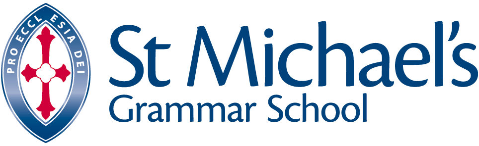
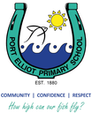
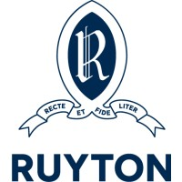
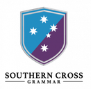
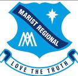
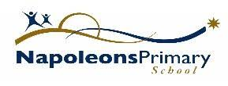
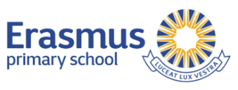
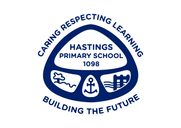
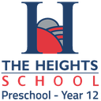
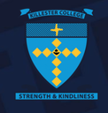
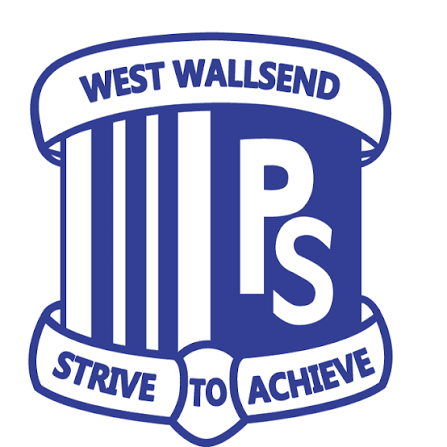
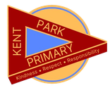
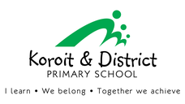
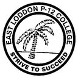
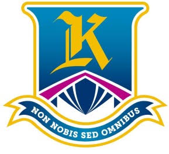
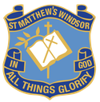
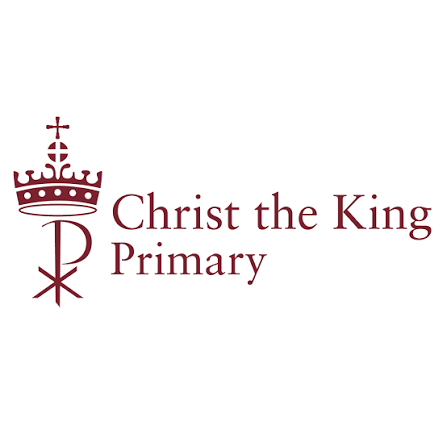
Free for every teacher, in every school. The good stuff starts now.
Count me in →